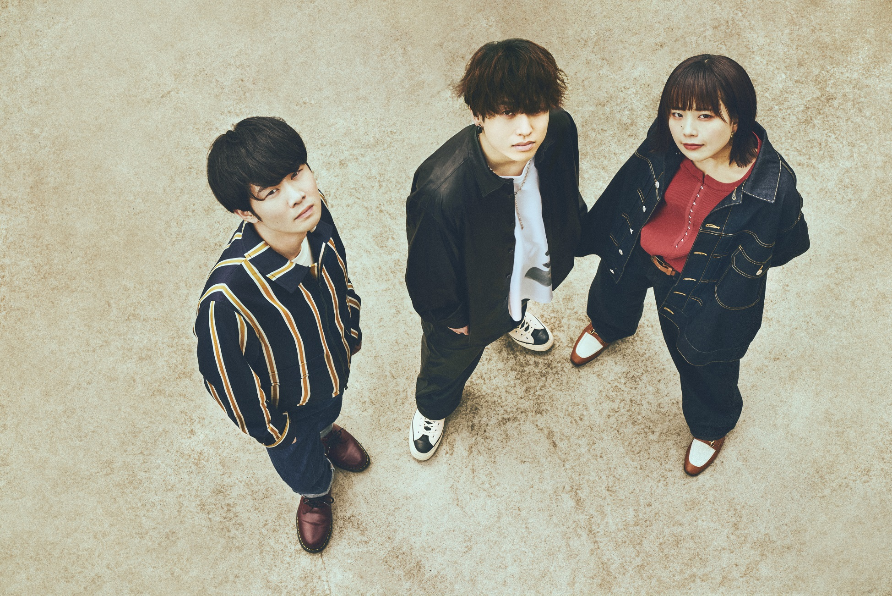

Favorite

カメラ
父親にカメラを譲ってもらってから、写真を撮ることが好きになりました！
風景を撮るのが好きです

音楽
音楽が好きで、小学校から高校まで吹奏楽部に所属してました！
j-popも広ーく浅ーくですが好きです！ここ１週間はsaucydogにはまってます
インスタグラム
ひたすら見る専ですが、ついついインスタを見てしまいます。最近は気づくと触ってしまっているので、使用時間制限をかけました、、、、、